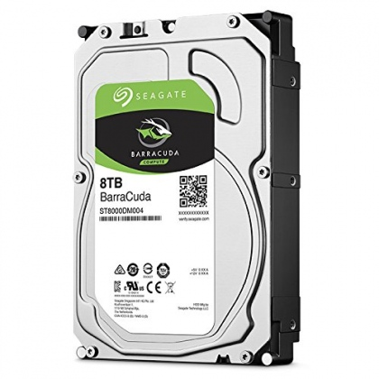
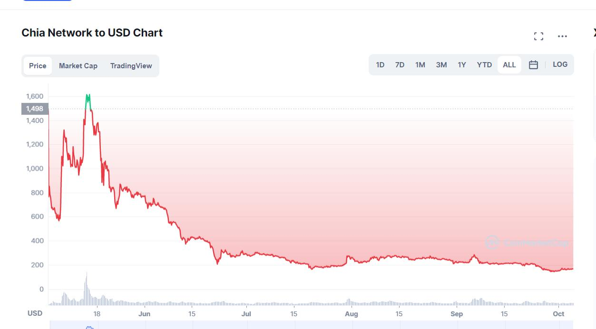

Cuối tháng 3 – đầu tháng 4, phong trào đào Chia coin (XCH) ở rộ vì nó có nhiều ưu điểm hơn so với việc đào coin bằng VGA hay Asic. Vấn đề bắt đầu nóng khi Chia coin từ giữa tháng 5 đã nổ ra nhiều cuộc tranh cãi về việc có nên bước chân vào đào Chia nói riêng và fork Chia nói chung?
(Bài viết này mang đánh giá chủ quan của tác giả)
1.Điểm mạnh khi đào coin bằng HDD
Điểm mạnh nhất khi đào coin bằng HDD là tiết kiệm điện! Quá trình tạo plot để đào là tốn nhiều điện nhất nhưng sau khi plot xong thì plot có thể dùng để đem đào mà không cần phải tốn quá nhiều điện, có thể coi là tiết kiệm điện. So với một con VGA xài 60-300W điện thì một cái ổ cứng HDD chỉ chạy tối đa 6-7W tiết kiệm hơn rất nhiều so với những con VGA.
Vấn đề tản nhiệt cũng nhẹ nhàng hơn so với VGA. Vga tỏa nhiệt rất cao và vấn đề tản nhiệt cho nó cũng là một vấn đề khó, nhưng đối với HDD thì chỉ cần một cái quạt nhỏ tầm 60W là làm mát được rất nhiều ổ cứng, không cần quá nhiều điện cho việc tản nhiệt như VGA.
Giá thành của HDD khá rẻ, nếu các bạn mua hàng mới thì mắc chứ các bạn mua hàng cũ thì bây giờ giá tầm 400k/Tb cho đến 550k/Tb là nhiều nhất.
Một điểm mạnh khác nữa là HDD sau khi mining có thể thanh lý dễ dàng thanh lí hơn là thanh lí VGA.
2.Mang tính chất là hold dài hạn hơn
Sau cú hit 1600$ cho 1 đồng XCH thì cú giảm mạnh đến bây giờ còn khoảng 170$/XCH đã khiến cho đồng tiền này bớt hấp dẫn. Vì sao?
Thứ nhất: vì đồng tiền này hiện tại chưa có bất kì dApp nào được xây dựng trên trên nền tảng của Chia và fork của nó.
Thứ hai: Do giá mở rất lớn, nên lượt bán tháo đẩy giá nó xuống khiến đồng tiền này cực kì mất giá.
Nhưng nếu cứ xét theo dài hạn thì Chia và các fork của nó vẫn có tiềm năng tăng trưởng khá lớn.
3.Vậy có nên đào bằng HDD?
Tùy bạn! Nếu bạn là một người muốn hold dài hạn mong tăng giá cao thì bạn nên thử vì Chia và fork, khi dApp được xây dựng trên nó thì giá sẽ thổi rất mạnh.
Tuy nhiên đồng coin này không dành cho những người mong muốn có ngay liền thu nhập cao như ETH hay RVN.